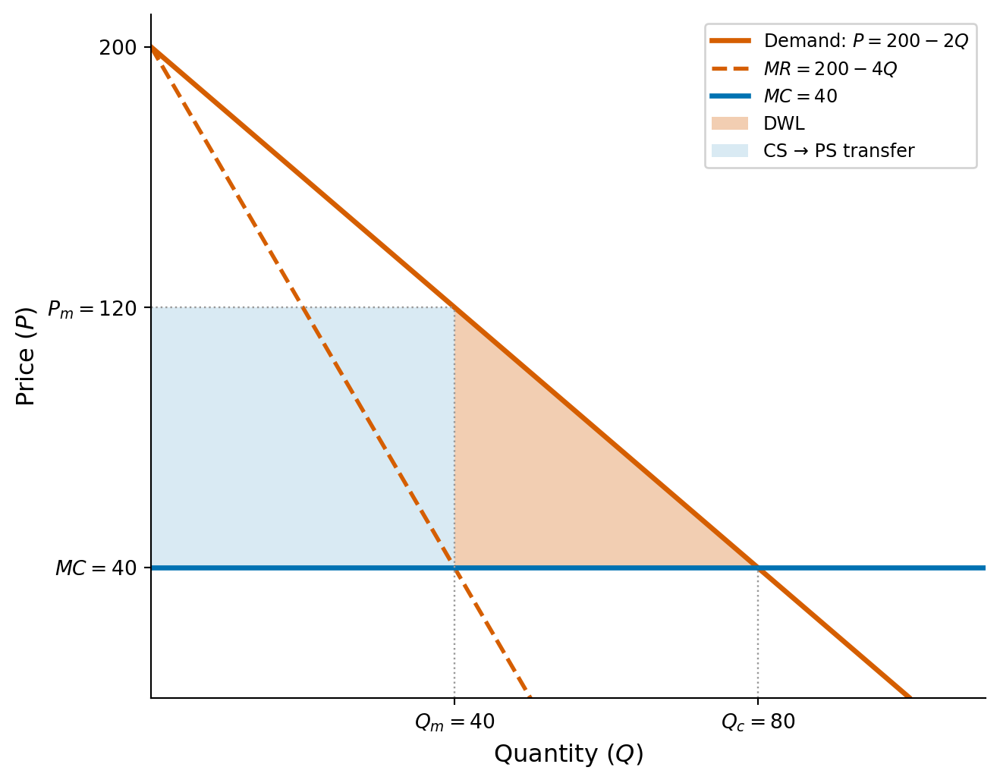
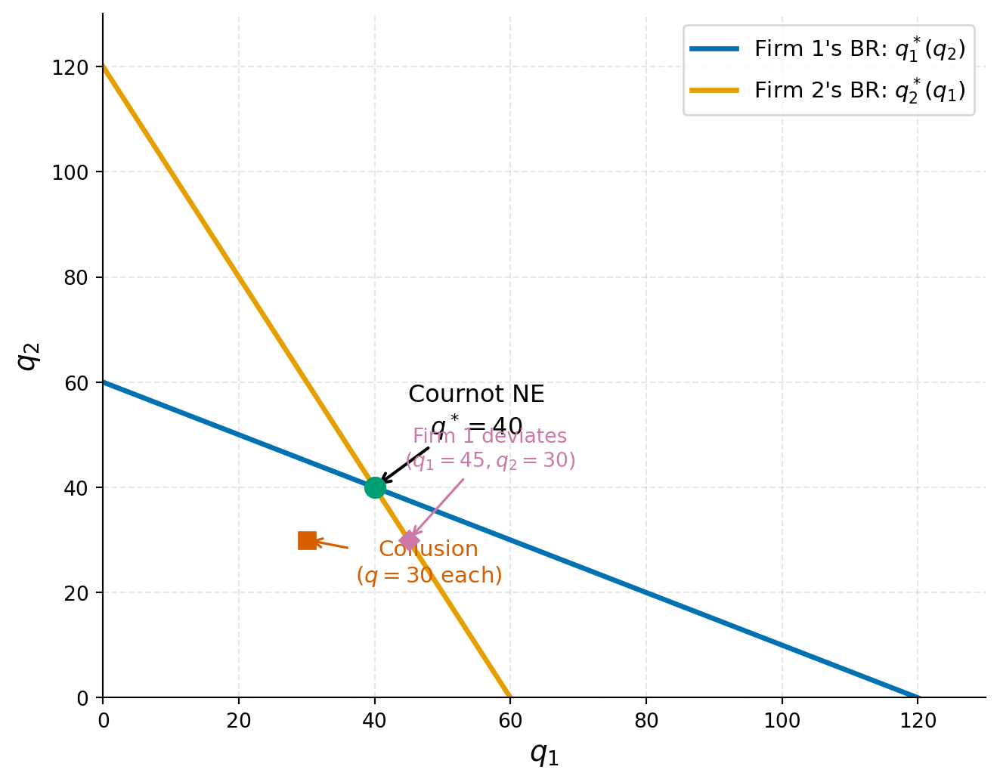

Midterm Practice Solutions
Econ 502: Advanced Microeconomics
Consumer
Market Power
Problem 1: Monopoly Pricing
Part (a): Monopoly equilibrium
Total revenue is \(TR = P \cdot Q = (200 - 2Q)Q = 200Q - 2Q^2\). Marginal revenue:
\[MR = \frac{dTR}{dQ} = 200 - 4Q\]
Setting \(MR = MC\):
\[200 - 4Q = 40 \quad \Longrightarrow \quad Q^*_m = 40\]
\[P^*_m = 200 - 2(40) = 120\]
\[\pi = (P - MC) \cdot Q = (120 - 40)(40) = \$3{,}200\]
\[\boxed{Q^*_m = 40, \quad P^*_m = \$120, \quad \pi = \$3{,}200}\]
Part (b): Competitive equilibrium
Under perfect competition, \(P = MC\):
\[200 - 2Q = 40 \quad \Longrightarrow \quad Q_c = 80, \quad P_c = \$40\]
Consumer surplus is the area of the triangle between the demand curve and the price:
\[CS_c = \frac{1}{2}(200 - 40)(80) = \$6{,}400\]
Producer surplus is zero since the firm earns no markup (\(P = MC\) with constant marginal cost). Total surplus:
\[\boxed{TS_c = CS_c + PS_c = \$6{,}400 + 0 = \$6{,}400}\]
Part (c): Deadweight loss
Under monopoly:
\[CS_m = \frac{1}{2}(200 - 120)(40) = \frac{1}{2}(80)(40) = \$1{,}600\]
\[PS_m = (120 - 40)(40) = \$3{,}200\]
\[TS_m = 1{,}600 + 3{,}200 = \$4{,}800\]
The deadweight loss is the surplus destroyed by monopoly pricing:
\[DWL = TS_c - TS_m = 6{,}400 - 4{,}800 = \$1{,}600\]
Equivalently, the DWL is the triangle between the demand curve and MC over the range of output lost:
\[DWL = \frac{1}{2}(P_m - MC)(Q_c - Q_m) = \frac{1}{2}(80)(40) = \$1{,}600\]
\[\boxed{DWL = \$1{,}600}\]
Part (d): Lerner Index and the inverse elasticity rule
The Lerner Index measures the firm’s markup as a fraction of price:
\[L = \frac{P_m - MC}{P_m} = \frac{120 - 40}{120} = \frac{2}{3}\]
To verify using the inverse elasticity rule, we need the price elasticity of demand at the monopoly point. From the demand curve \(Q = 100 - P/2\):
\[\frac{dQ}{dP} = -\frac{1}{2}\]
\[\varepsilon_D = \frac{dQ}{dP} \cdot \frac{P}{Q} = -\frac{1}{2} \cdot \frac{120}{40} = -\frac{3}{2}\]
The inverse elasticity rule states that \(L = 1/|\varepsilon_D|\):
\[\frac{1}{|\varepsilon_D|} = \frac{1}{3/2} = \frac{2}{3} \quad \checkmark\]
\[\boxed{L = \frac{2}{3}, \quad |\varepsilon_D| = \frac{3}{2}}\]
The monopolist operates in the elastic portion of the demand curve (\(|\varepsilon_D| > 1\)), as we would expect. If demand were inelastic, the firm could increase revenue by raising the price (reducing output), so it would never be optimal to produce in the inelastic region.
Problem 2: Third-Degree Price Discrimination
Part (a): Price discrimination
The inverse demand curves are \(P_A = 100 - Q_A\) and \(P_S = 60 - Q_S\). The monopolist maximizes profit in each market separately by setting \(MR = MC\):
Adults:
\[MR_A = 100 - 2Q_A = 20 \quad \Longrightarrow \quad Q_A = 40, \quad P_A = 60\]
\[\pi_A = (60 - 20)(40) = \$1{,}600\]
Students:
\[MR_S = 60 - 2Q_S = 20 \quad \Longrightarrow \quad Q_S = 20, \quad P_S = 40\]
\[\pi_S = (40 - 20)(20) = \$400\]
\[\boxed{\text{Total profit} = 1{,}600 + 400 = \$2{,}000, \quad \text{Total output} = 60}\]
Part (b): Uniform pricing
With a single price, aggregate demand is the horizontal sum (\(P \leq 60\)):
\[Q = Q_A + Q_S = (100 - P) + (60 - P) = 160 - 2P\]
Inverting: \(P = 80 - Q/2\). Marginal revenue:
\[MR = 80 - Q = 20 \quad \Longrightarrow \quad Q = 60, \quad P = 50\]
Check that both markets are served: \(Q_A = 100 - 50 = 50 > 0\) and \(Q_S = 60 - 50 = 10 > 0\). \(\checkmark\)
\[\boxed{P = \$50, \quad Q = 60, \quad \pi = (50 - 20)(60) = \$1{,}800}\]
Note that total output is the same under both regimes (60 units). This is a general result for linear demand curves when both markets are served under uniform pricing.
Part (c): Elasticities and Lerner index
Under price discrimination, at the optimal prices:
Adults: \(\varepsilon_A = \dfrac{dQ_A}{dP_A} \cdot \dfrac{P_A}{Q_A} = (-1) \cdot \dfrac{60}{40} = -\dfrac{3}{2}\)
\[L_A = \frac{P_A - c}{P_A} = \frac{60 - 20}{60} = \frac{2}{3} = \frac{1}{|\varepsilon_A|} \quad \checkmark\]
Students: \(\varepsilon_S = \dfrac{dQ_S}{dP_S} \cdot \dfrac{P_S}{Q_S} = (-1) \cdot \dfrac{40}{20} = -2\)
\[L_S = \frac{P_S - c}{P_S} = \frac{40 - 20}{40} = \frac{1}{2} = \frac{1}{|\varepsilon_S|} \quad \checkmark\]
\[\boxed{L_A = \frac{2}{3} > L_S = \frac{1}{2}}\]
Adults get the higher markup because their demand is less elastic (\(|\varepsilon_A| = 3/2 < |\varepsilon_S| = 2\)). Adults are less price-sensitive, so the monopolist can extract more surplus from them by charging a higher price relative to marginal cost. This is the key insight of third-degree price discrimination: charge more where demand is less elastic.
Part (d): Welfare comparison
Under price discrimination:
\[CS_A = \frac{1}{2}(100 - 60)(40) = 800, \qquad CS_S = \frac{1}{2}(60 - 40)(20) = 200\]
\[\text{Total CS} = 1{,}000, \qquad \text{Profit} = 2{,}000, \qquad \text{Total welfare} = 3{,}000\]
Under uniform pricing:
\[CS_A = \frac{1}{2}(100 - 50)(50) = 1{,}250, \qquad CS_S = \frac{1}{2}(60 - 50)(10) = 50\]
\[\text{Total CS} = 1{,}300, \qquad \text{Profit} = 1{,}800, \qquad \text{Total welfare} = 3{,}100\]
\[\boxed{\text{Welfare is \$100 higher under uniform pricing}}\]
| CS | Profit | Total Welfare | |
|---|---|---|---|
| Price discrimination | 1,000 | 2,000 | 3,000 |
| Uniform pricing | 1,300 | 1,800 | 3,100 |
Price discrimination is not welfare-improving here. Consumers are worse off (\(-300\) in CS) and the firm is better off (\(+200\) in profit), but the net effect is a welfare loss of \(100\). Since total output is the same under both regimes, discrimination simply reallocates output from the more elastic market (students) to the less elastic market (adults). This reallocation is inefficient: units are moved from consumers with higher marginal valuations (students priced out at \(P_S = 40\)) to consumers with lower marginal valuations (additional adults served at \(P_A = 60\)).
Note: If the student market would be shut out entirely under uniform pricing (e.g., if \(c\) were higher), price discrimination could be welfare-improving by opening a new market.
Problem 3: Cournot Duopoly
Part (a): Best response functions
Firm 1 maximizes profit given firm 2’s output:
\[\pi_1 = (150 - q_1 - q_2)q_1 - 30q_1 = (120 - q_1 - q_2)q_1\]
First-order condition:
\[\frac{\partial \pi_1}{\partial q_1} = 120 - 2q_1 - q_2 = 0\]
\[\boxed{q_1^*(q_2) = 60 - \frac{q_2}{2}}\]
By symmetry:
\[\boxed{q_2^*(q_1) = 60 - \frac{q_1}{2}}\]
Each firm’s optimal output is decreasing in the other’s output: the more firm 2 produces, the less firm 1 wants to produce (quantities are strategic substitutes).
Part (b): Cournot-Nash equilibrium
In a symmetric equilibrium \(q_1 = q_2 = q^*\):
\[q^* = 60 - \frac{q^*}{2} \quad \Longrightarrow \quad \frac{3q^*}{2} = 60 \quad \Longrightarrow \quad q^* = 40\]
\[Q^* = 2q^* = 80, \qquad P^* = 150 - 80 = 70\]
\[\pi^* = (70 - 30)(40) = \$1{,}600\]
\[\boxed{q^* = 40, \quad P^* = \$70, \quad \pi^* = \$1{,}600 \text{ per firm}}\]
Part (c): Collusion and deviation
Collusion: The firms maximize joint profit \(\pi = (150 - Q)Q - 30Q = 120Q - Q^2\):
\[\frac{d\pi}{dQ} = 120 - 2Q = 0 \quad \Longrightarrow \quad Q_m = 60, \quad q_{\text{each}} = 30\]
\[P_m = 150 - 60 = 90, \qquad \pi_{\text{each}} = (90 - 30)(30) = \$1{,}800\]
Deviation: If firm 2 produces \(q_2 = 30\) (sticks to the agreement), firm 1’s best response is:
\[q_1^* = 60 - \frac{30}{2} = 45\]
Firm 1’s profit from deviating:
\[P = 150 - 45 - 30 = 75, \qquad \pi_1^{\text{dev}} = (75 - 30)(45) = \$2{,}025\]
Since \(\$2{,}025 > \$1{,}800\), firm 1 would want to deviate. By producing 45 instead of 30, firm 1 increases its profit by \(\$225\) at firm 2’s expense. Both firms face this temptation, which is why the collusive outcome is not a Nash equilibrium. This is essentially a Prisoner’s Dilemma: both firms would be better off cooperating, but each has an individual incentive to cheat.
Part (d): Comparison of market structures
Competition: \(P = MC = 30\), so \(Q = 150 - 30 = 120\). With two firms splitting equally, \(q = 60\) each, and \(\pi = 0\).
| Price | Total Output | Per-Firm Profit | |
|---|---|---|---|
| Competition | \(\$30\) | \(120\) | \(\$0\) |
| Cournot | \(\$70\) | \(80\) | \(\$1{,}600\) |
| Collusion (Monopoly) | \(\$90\) | \(60\) | \(\$1{,}800\) |
The Cournot outcome lies between competition and monopoly. As we move from competition to Cournot to collusion, price rises, total output falls, and per-firm profit increases. This pattern illustrates the fundamental trade-off: firms with market power restrict output to raise prices, increasing their profits at the expense of consumer surplus and total welfare.

Problem 4: Bertrand Competition
Part (a): \(p_1 = p_2 = c\) is a Nash equilibrium
We need to show that neither firm can increase its profit by unilaterally changing its price.
At \(p_1 = p_2 = c\), each firm earns zero profit (price equals marginal cost). Consider firm 1’s possible deviations:
Raise price (\(p_1 > c\)): Firm 1 loses all customers to firm 2 (which still charges \(c\)). Firm 1’s profit remains \(\$0\). No improvement.
Lower price (\(p_1 < c\)): Firm 1 captures the entire market but sells below cost. Firm 1’s profit is \((p_1 - c) \cdot Q(p_1) < 0\). This is strictly worse.
Since no deviation is profitable, \(p_1 = p_2 = c\) is a Nash equilibrium. \(\quad \checkmark\)
Part (b): \(p_1 = p_2 > c\) is not a Nash equilibrium
Suppose both firms charge \(p = p_1 = p_2 > c\), splitting the market equally. Each firm earns:
\[\pi = (p - c) \cdot \frac{Q(p)}{2} > 0\]
Now consider firm 1 deviating to \(p_1 = p - \epsilon\) (for small \(\epsilon > 0\)). Since the good is homogeneous and firm 1 is now cheaper, it captures the entire market:
\[\pi_1^{\text{dev}} = (p - \epsilon - c) \cdot Q(p - \epsilon)\]
For small \(\epsilon\), this is approximately \((p - c) \cdot Q(p)\), which is roughly double firm 1’s original profit. Since this is a profitable deviation, the original prices cannot be a Nash equilibrium. \(\quad \checkmark\)
Part (c): Asymmetric costs
With \(MC_1 = 10\) and \(MC_2 = 20\), firm 1 has a cost advantage.
If firm 1 sets \(p_1 = 20 - \epsilon\) (just below firm 2’s cost), it captures the entire market while firm 2 cannot profitably undercut (doing so would mean pricing below its own marginal cost).
At \(p_1 = 20\) (taking the limit as \(\epsilon \to 0\)):
\[Q = 100 - 20 = 80\]
\[\pi_1 = (20 - 10)(80) = \$800\]
Firm 2 earns \(\$0\).
\[\boxed{p_1^* = 20, \quad \pi_1 = \$800, \quad \pi_2 = \$0}\]
The low-cost firm captures the entire market by pricing at (or just below) the rival’s marginal cost. Firm 1’s cost advantage translates directly into profit, but it still cannot charge the monopoly price because firm 2 would undercut.
Part (d): Resolving the Bertrand paradox
The Bertrand paradox arises because two critical assumptions drive the extreme result. Relaxing either allows firms to earn positive profits:
Product differentiation. If goods are not perfect substitutes (e.g., brand loyalty, quality differences, location), then a small price cut does not capture the entire market. Consumers may prefer one firm’s product even at a slightly higher price, giving each firm some market power.
Capacity constraints. If firms cannot serve the entire market (limited production capacity), then undercutting does not let a firm capture all demand. The rival retains customers who cannot be served by the undercutting firm, allowing both to charge above marginal cost.
Other valid answers include: repeated interaction (firms can sustain higher prices through tacit collusion if they interact repeatedly) and switching to quantity competition (the Cournot model yields positive profits with just two firms, as shown in Problem 3).